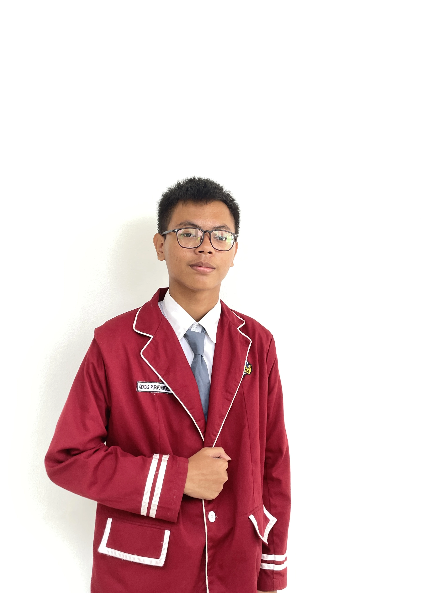

[Nama Ketua]
[Nama Wakil]
[Nama Sekretaris]
[Nama Bendahara]
Platform Digital
SENTRA Developer
SENTRA tidak lahir sendiri. Di balik setiap piksel dan setiap baris kode, ada dua orang yang menuangkan waktu, pikiran, dan dedikasi mereka untuk menghadirkan platform digital pertama OSIS Nawasena — dari halaman kosong, menjadi sesuatu yang nyata dan bisa dibanggakan.
Maulana Ferdi Irawan
Dialah yang pertama kali membayangkan SENTRA sebagai lebih dari sekadar website — sebuah wajah digital organisasi. Ferdi merancang setiap halaman, menyusun setiap komponen visual, dan memastikan bahwa siapa pun yang membuka SENTRA merasakan identitas Nawasena bahkan sebelum membaca satu kata pun. Dari palet warna hingga animasi terkecil, semuanya lahir dari tangannya.
Periode Pengembangan: 2025 / 2026

Juansyah Akbar
Jika Ferdi membangun wajahnya, Juansyah membangun otaknya. Ia merancang alur data dan logika yang membuat SENTRA berjalan tanpa hambatan di balik layar. Lebih dari itu, Juansyah memastikan setiap fitur tidak hanya terlihat baik, tapi juga terasa intuitif — karena pengalaman pengguna yang mulus adalah tanda arsitektur yang matang.
Periode Pengembangan: 2025 / 2026
Keduanya membuktikan bahwa kontribusi terbesar tidak selalu terlihat di atas panggung — kadang ia hidup dalam baris kode yang tak pernah dibaca orang, namun dirasakan oleh semua.
Radio Nawasena